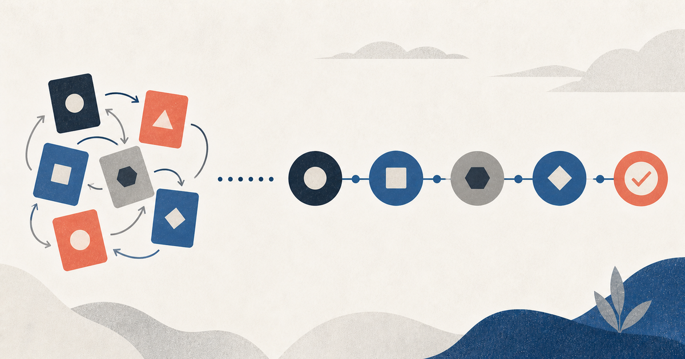

Черновик · Агентная разработка и автоматизация процессов
MECE в агентской разработке: как делить работу без пересечений и пробелов
Статус: черновик. Статья доступна по прямой ссылке и пока не входит в публичный индекс.

Одна из главных проблем агентской разработки — не слабая модель и не маленькое контекстное окно. Проблема начинается раньше: мы сами приносим агенту плохо структурированную работу.
Одна задача одновременно называется багом, фичей и рефакторингом. Требования частично дублируются, а часть поведения вообще не описана. Несколько агентов получают якобы независимые подзадачи, а потом одновременно меняют одни файлы.
Агент редко останавливается и говорит: «У вас сломана декомпозиция». Обычно он выбирает одну из возможных интерпретаций и уверенно продолжает работу.
Что такое MECE
MECE расшифровывается как:
- Mutually Exclusive — категории не пересекаются;
- Collectively Exhaustive — категории вместе покрывают всю рассматриваемую область.
Если совсем просто, MECE требует: каждый объект из заранее определённой области должен попасть ровно в одну категорию.
Чтобы проверить классификацию, нужно ответить на два вопроса:
- Может ли один объект одновременно попасть в несколько категорий?
- Может ли существовать объект, который не попадёт никуда?
Если ответ хотя бы на один вопрос — «да», классификация не является MECE.
Простой пример
Допустим, мы классифицируем задачи разработки так:
- срочные;
- backend;
- задачи от клиента;
- баги.
Одна задача может одновременно быть срочным backend-багом от клиента. Категории пересекаются.
При этом непонятно, куда положить внутреннее исследование производительности или подготовку инфраструктуры. Значит, классификация ещё и неполна.
Мы просто смешали несколько независимых измерений: срочность, технический слой, источник задачи и тип работы. Каждое измерение может быть полезно, но их нельзя складывать в один список.
MECE — это не «разложить всё по полочкам»
MECE применим не к любому списку. Сначала нужно определить область, которую мы делим, и основание, по которому делим. Например, «все входящие engineering-задачи» — область, а «тип работы» — основание. Срочность, источник задачи и технический слой — другие измерения; их нельзя незаметно смешивать с типом работы в один набор категорий.
Идеальная проверка выглядит так: для каждого объекта можно показать ровно одну категорию, а для каждого реалистичного объекта в области существует категория. Если это невозможно, нужно изменить predicates, добавить приоритеты или явно оставить Human Gate. MECE — это способ обнаружить неоднозначность, а не повод притвориться, что её нет.
Почему это важно для агентов
Человек способен заметить противоречие и переспросить. AI-агент часто воспринимает структуру задачи как готовый контракт.
Если категории пересекаются, появляется скрытая недетерминированность:
- один запуск классифицирует задачу как баг;
- другой создаст спецификацию новой фичи;
- третий решит, что это локальное изменение;
- четвёртый запустит архитектурное исследование.
Каждый вариант может выглядеть логично. Но процесс перестаёт быть воспроизводимым.
Если классификация неполна, агент начинает импровизировать: изобретает новую категорию, помещает задачу в ближайшую существующую или пропускает часть scope.
Три применения MECE в агентском SDLC
SDLC — это полный жизненный цикл разработки. На практике этапы могут пересекаться и возвращаться на предыдущие шаги, поэтому ниже показана условная схема:
intake
→ discovery
→ requirements
→ design
→ planning
→ implementation
→ verification
→ release
→ operationsMECE можно применять на каждом этапе, но основная польза появляется там, где нужно выбрать один маршрут, одного владельца или непересекающуюся единицу работы.
1. Классификация: одна задача — один основной маршрут
Перед началом работы агент должен определить тип задачи:
- Есть активный ущерб production —
Incident. - Поведение противоречит принятому контракту —
Bug Fix. - До решения нужно собрать evidence —
Research. - Работа содержит несколько delivery units —
Epic. - Меняется внутренняя структура без изменения поведения —
Refactoring. - Появляется или изменяется поведение —
Feature. - Маршрут нельзя выбрать уверенно —
Human Routing.
Incident может одновременно оказаться багом. Поэтому этот список работает не как плоская классификация, а как упорядоченное дерево решений: сначала проверяется operational impact, затем дефект, исследование и остальные типы работы. Приоритеты устраняют пересечения, а Human Routing остаётся явным выходом для неоднозначных случаев.
У хорошего task routing есть три свойства:
- у каждого маршрута есть проверяемый predicate;
- пересечения разрешаются через precedence;
- для непокрытых случаев существует fallback.
2. Требования: полное покрытие поведения
На discovery-этапе часто смешивают пользовательскую боль, предполагаемую причину, идею решения, ограничение и критерий успеха.
Например: «Пользователи бросают оформление заказа, поэтому нужно переписать checkout на React и уменьшить количество шагов».
В одной фразе уже находятся наблюдение, гипотеза о проблеме, технология и выбранное изменение интерфейса. Агент получает готовое решение раньше, чем подтверждена проблема.
Полезнее разделить problem space на наблюдаемые симптомы, затронутых пользователей, подтверждённые причины, допущения, ограничения, ожидаемый результат и открытые вопросы.
MECE помогает не повторять одну гипотезу в нескольких разделах и не терять важный класс информации. Но discovery часто является открытым исследованием, поэтому здесь MECE используется для поиска gaps, а не для притворства, будто мы уже знаем всё.
3. Декомпозиция требований: полное покрытие поведения
Плохой список требований выглядит так:
- пользователь может создать заказ;
- реализовать форму заказа;
- сохранять данные заказа;
- добавить API для заказов;
- показывать ошибки.
Здесь смешаны пользовательское поведение, UI, техническая реализация, хранение данных и обработка ошибок.
Более строгий подход начинается с области: всё наблюдаемое поведение, которое должна обеспечить фича. После этого можно выделить пользовательские результаты:
- пользователь успешно создаёт заказ;
- пользователь исправляет невалидные данные;
- пользователь повторяет отправку после временной ошибки;
- система предотвращает дублирование заказа;
- оператор видит необрабатываемую ошибку.
Каждый результат затем связывается с контрактами, реализацией и проверками. MECE помогает найти требование, которое дважды описывает одно поведение, или важный сценарий, который не покрыт вообще.
4. Делегирование: непересекающиеся зоны ответственности
Фраза «запустим трёх агентов параллельно» сама по себе не создаёт параллелизм.
Перед делегированием нужно определить область — например, все результаты, необходимые для подготовки фичи к реализации — и назначить владельцев:
- агент A проверяет требования и acceptance criteria;
- агент B исследует существующую реализацию и зависимости;
- агент C анализирует риски, rollout и способы проверки;
- основной агент принимает решения и собирает итоговый план.
Контекст агентов может пересекаться. Все они могут читать один код и одну спецификацию. Но владение итоговым результатом и write scope лучше делать эксклюзивными.
Read scope может пересекаться. Write scope и ownership результата — нет.
5. Проверки: найти пробелы, не запрещая избыточность
Фраза «добавить тесты» ничего не гарантирует. Нужно определить все требования и риски, которые должны быть подтверждены перед релизом.
Для каждого требования указывается, что проверяется, каким способом, какой результат считается успешным, где появится evidence и кто принимает результат.
MECE полезен при проверке покрытия требований: каждое обязательное требование должно иметь хотя бы один способ подтверждения.
Но сами уровни тестирования не обязаны быть взаимоисключающими. Один критичный сценарий полезно проверять unit-, integration- и acceptance-тестами. Это намеренная многослойная защита, а не ошибка декомпозиции.
Как проводить MECE-аудит
- Определить область. Не «разложи задачи», а «разложи все входящие engineering-задачи, для которых нужно выбрать delivery flow».
- Выбрать одно основание. Не смешивать тип работы, срочность, технический слой, статус и источник задачи.
- Проверить пересечения. Найти объект, который потенциально попадает в две категории, и уточнить predicates или precedence.
- Найти непокрытые случаи. Привести реалистичные объекты, не попадающие никуда, и добавить fallback или Human Gate.
- Проверить действие. Для каждой категории должны быть определены следующее действие, owner и exit condition.
Где MECE применять не нужно
MECE плохо подходит для открытого исследования: если пространство решений ещё неизвестно, нельзя честно утверждать, что список вариантов исчерпывающий.
Не нужно требовать MECE от графа зависимостей. Один компонент может зависеть от нескольких сервисов, требований и архитектурных решений.
Не нужно превращать ортогональные quality attributes в взаимоисключающие категории. Correctness, security, performance и operability должны выполняться вместе.
Не нужно устранять намеренную избыточность проверок. Критичный сценарий полезно проверять на нескольких уровнях.
Главный вывод
MECE не делает агента умнее. Оно делает процесс вокруг агента менее неоднозначным.
До запуска агента нужно ответить на три вопроса:
- Что именно мы классифицируем?
- Почему каждый объект получает один основной маршрут или owner?
- Что произойдёт с объектом, который не подошёл никуда?
В связке с task routing, progressive disclosure, explicit ownership, validation profiles и Human Gates MECE превращается не в абстрактную консультантскую аббревиатуру, а в нормальный инженерный инструмент.
Именно такие скучные на первый взгляд правила позволяют агентам стабильно проходить весь SDLC — от входящей задачи до проверенного результата.